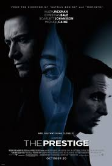

The Prestige
This movie tore me in half. I wanted to love it with all my heart but *spoilers* the cloning machine was too fantastical
to work in the film. It dedicated too strongly from its base it reality. This isn’t always an issue but it was such a
massive mistake for a film that explore people who feign surpassing reality, when you explain a trick with “well a
cloning machine existed in 1890” it cheapens the film. Now this is one small pet peeve of mine and if this sort of thing
doesn’t bother you I can see this being the best film you’ve ever seen. It does everything right EXCEPT for that one
mishap that works in its own way. Worth watching 100000% I’ll leave it up to you whether or not you enjoy the big twist.
Personally I loved everyone about the twist except the part about the clones.
